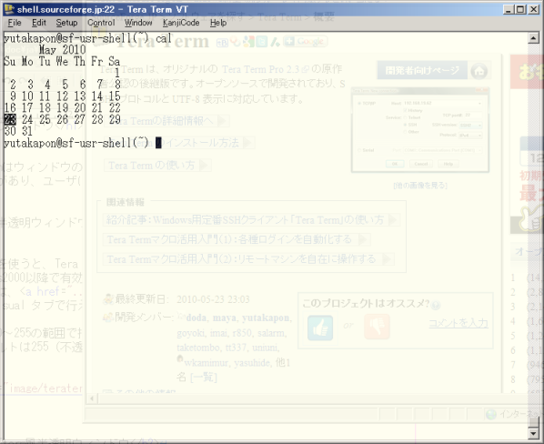
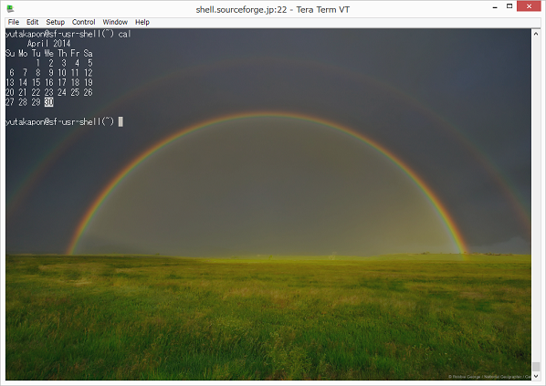

半透明ウィンドウ、テーマを使用してTera Termのlook and feelを変更できます。半透明ウィンドウとテーマは同時に設定することができます。
この機能を使うと、Tera Termのウィンドウを半透明にすることができます。Windows2000以降で有効です。
設定は、[Setup] Additional settings の Visual タブで行えます。
透明度は0〜255の範囲で指定することができ、値を小さくするほど透明度は強くなります。
デフォルトは255（不透明）です。
ウィンドウのアクティブ時と非アクティブ時各々で透明度を指定できます。
タスクバー上でホイールを回転させると一時的に透明度を変更できます。

Tera Termの背景の画像、文字の色を一括して変更するテーマを使用することができます。
テーマは Tera Term 4のEterm lookfeel(Eterm風にする)を置き換えたものです
(Etermはxtermの置き換えを意図した vt102 端末エミュレーターです)。
[Setup] Additional settings の Visual タブで、起動時に読み込むテーマファイルを指定します。またテーマの設定は、Theme Editorボタンを押すと表示される設定ダイアログで行えます。
Tera Term の背景に、デスクトップ画像(Windowsの背景画像)や指定画像を表示することができます。デスクトップ画像と指定画像をブレンドして表示することもできます。
この機能を使うと、Tera Termの背景にデスクトップ画像が表示されます。

画像を指定することができます。
